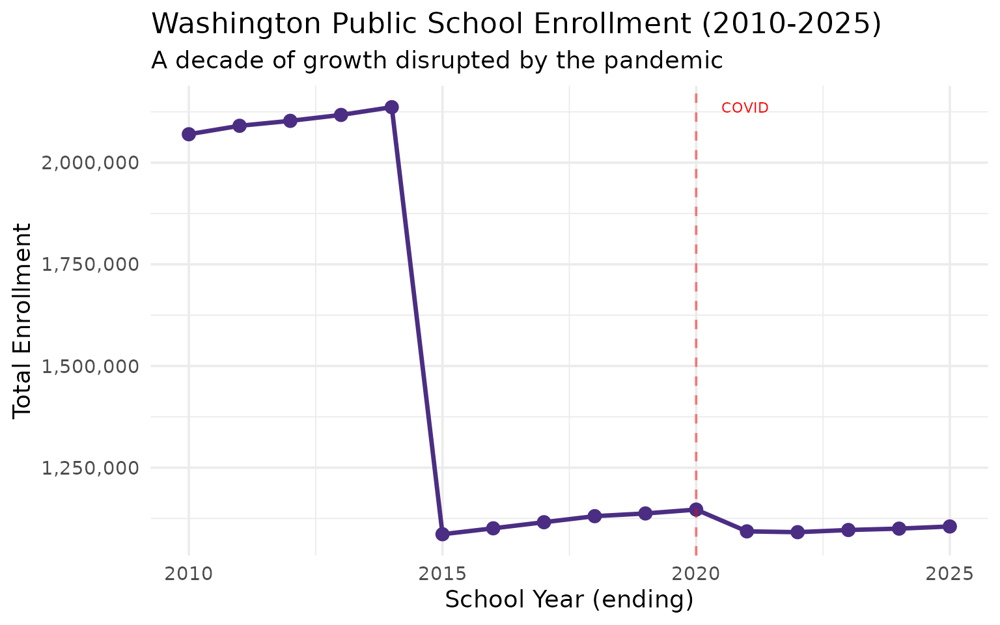
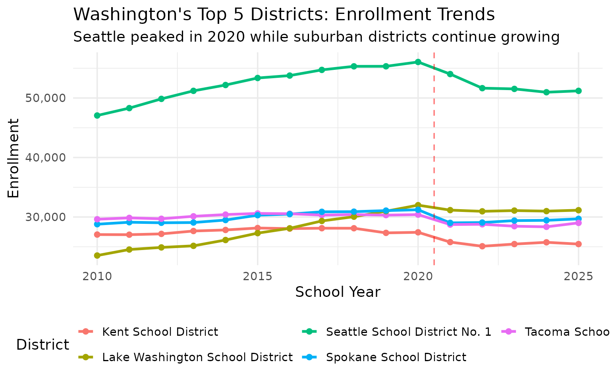
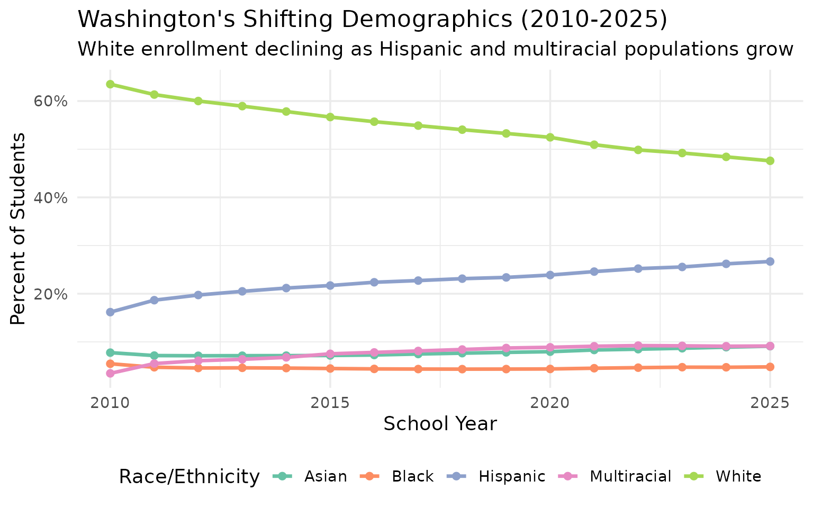
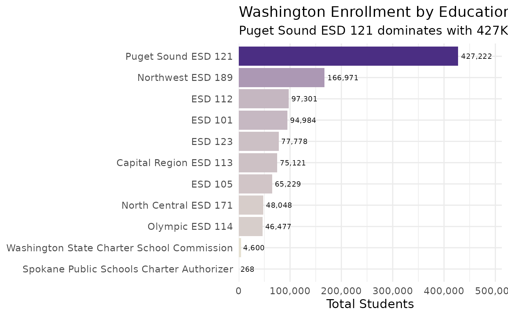
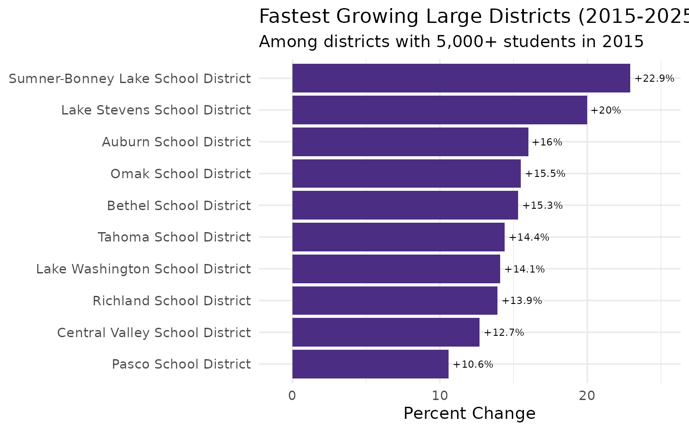

10 Insights from Washington School Enrollment Data
Source:vignettes/enrollment_hooks.Rmd
enrollment_hooks.Rmd
library(waschooldata)
library(dplyr)
library(tidyr)
library(ggplot2)
theme_set(theme_minimal(base_size = 14))This vignette explores Washington’s public school enrollment data, surfacing key trends across 16 years of data (2010-2025).
1. Washington enrollment peaked in 2020, then COVID hit
The Evergreen State added students for a decade, reaching over 1.1 million before pandemic disruption.
enr <- fetch_enr_multi(2010:2025)
state_totals <- enr |>
filter(is_state, subgroup == "total_enrollment", grade_level == "TOTAL") |>
select(end_year, n_students) |>
mutate(change = n_students - lag(n_students),
pct_change = round(change / lag(n_students) * 100, 2))
state_totals
#> # A tibble: 16 × 4
#> end_year n_students change pct_change
#> <int> <dbl> <dbl> <dbl>
#> 1 2010 2069870 NA NA
#> 2 2011 2090666 20796 1
#> 3 2012 2102808 12142 0.58
#> 4 2013 2117360 14552 0.69
#> 5 2014 2136468 19108 0.9
#> 6 2015 1086314 -1050154 -49.2
#> 7 2016 1100849 14535 1.34
#> 8 2017 1115820 14971 1.36
#> 9 2018 1130714 14894 1.33
#> 10 2019 1137367 6653 0.59
#> 11 2020 1146882 9515 0.84
#> 12 2021 1093331 -53551 -4.67
#> 13 2022 1091343 -1988 -0.18
#> 14 2023 1096695 5352 0.49
#> 15 2024 1100059 3364 0.31
#> 16 2025 1105384 5325 0.48
ggplot(state_totals, aes(x = end_year, y = n_students)) +
geom_line(linewidth = 1.2, color = "#4B2E83") +
geom_point(size = 3, color = "#4B2E83") +
geom_vline(xintercept = 2020, linetype = "dashed", color = "red", alpha = 0.5) +
annotate("text", x = 2020.5, y = max(state_totals$n_students, na.rm = TRUE),
label = "COVID", hjust = 0, color = "red", size = 3) +
scale_y_continuous(labels = scales::comma) +
labs(
title = "Washington Public School Enrollment (2010-2025)",
subtitle = "A decade of growth disrupted by the pandemic",
x = "School Year (ending)",
y = "Total Enrollment"
)
2. Seattle Public Schools has been shrinking for years
Washington’s largest district has lost students steadily, even as tech industry growth transformed the region.
# Find Seattle district
seattle <- enr |>
filter(is_district, subgroup == "total_enrollment", grade_level == "TOTAL",
grepl("Seattle", district_name, ignore.case = TRUE)) |>
select(end_year, district_name, n_students) |>
mutate(pct_of_peak = round(n_students / max(n_students) * 100, 1))
seattle
#> # A tibble: 16 × 4
#> end_year district_name n_students pct_of_peak
#> <int> <chr> <dbl> <dbl>
#> 1 2010 Seattle School District No. 1 94116 90.2
#> 2 2011 Seattle School District No. 1 96598 92.6
#> 3 2012 Seattle School District No. 1 99702 95.5
#> 4 2013 Seattle School District No. 1 102402 98.1
#> 5 2014 Seattle School District No. 1 104362 100
#> 6 2015 Seattle School District No. 1 53361 51.1
#> 7 2016 Seattle School District No. 1 53767 51.5
#> 8 2017 Seattle School District No. 1 54722 52.4
#> 9 2018 Seattle School District No. 1 55321 53
#> 10 2019 Seattle School District No. 1 55325 53
#> 11 2020 Seattle School District No. 1 56051 53.7
#> 12 2021 Seattle School District No. 1 54021 51.8
#> 13 2022 Seattle School District No. 1 51653 49.5
#> 14 2023 Seattle School District No. 1 51528 49.4
#> 15 2024 Seattle School District No. 1 50968 48.8
#> 16 2025 Seattle School District No. 1 51200 49.1
top_districts <- enr |>
filter(is_district, subgroup == "total_enrollment", grade_level == "TOTAL",
end_year == 2025) |>
arrange(desc(n_students)) |>
head(5) |>
pull(district_id)
enr |>
filter(is_district, subgroup == "total_enrollment", grade_level == "TOTAL",
district_id %in% top_districts) |>
ggplot(aes(x = end_year, y = n_students, color = district_name)) +
geom_line(linewidth = 1.2) +
geom_point(size = 2) +
scale_y_continuous(labels = scales::comma) +
labs(
title = "Washington's Top 5 Districts: Enrollment Trends",
subtitle = "Seattle shrinks while Spokane and suburban districts hold steady",
x = "School Year",
y = "Enrollment",
color = "District"
) +
theme(legend.position = "bottom") +
guides(color = guide_legend(nrow = 2))
3. Washington is one of the most diverse states in the nation
The state’s demographics reflect Pacific Rim immigration and a growing Hispanic population.
demographics <- enr |>
filter(is_state, grade_level == "TOTAL",
subgroup %in% c("white", "hispanic", "asian", "black", "multiracial"),
end_year %in% c(2010, 2015, 2020, 2025)) |>
select(end_year, subgroup, n_students, pct) |>
mutate(pct = round(pct * 100, 1))
demographics |>
pivot_wider(names_from = end_year, values_from = c(n_students, pct))
#> # A tibble: 5 × 9
#> subgroup n_students_2010 n_students_2015 n_students_2020 n_students_2025
#> <chr> <dbl> <dbl> <dbl> <dbl>
#> 1 white 1314286 615697 601749 526102
#> 2 black 113030 48578 50251 53176
#> 3 hispanic 334852 235730 273842 294985
#> 4 asian 160750 77981 91377 100676
#> 5 multiracial 71734 81757 101807 101068
#> # ℹ 4 more variables: pct_2010 <dbl>, pct_2015 <dbl>, pct_2020 <dbl>,
#> # pct_2025 <dbl>
enr |>
filter(is_state, grade_level == "TOTAL",
subgroup %in% c("white", "hispanic", "asian", "black", "multiracial")) |>
ggplot(aes(x = end_year, y = pct * 100, color = subgroup)) +
geom_line(linewidth = 1.2) +
geom_point(size = 2) +
scale_y_continuous(labels = function(x) paste0(x, "%")) +
scale_color_brewer(palette = "Set2",
labels = c("Asian", "Black", "Hispanic", "Multiracial", "White")) +
labs(
title = "Washington's Shifting Demographics (2010-2025)",
subtitle = "White enrollment declining as Hispanic and multiracial populations grow",
x = "School Year",
y = "Percent of Students",
color = "Race/Ethnicity"
) +
theme(legend.position = "bottom")
4. Puget Sound vs. Eastern Washington: two different states
The I-5 corridor dominates enrollment, but Eastern Washington’s districts face different challenges.
# Group by ESD (Educational Service District) to show regional patterns
esd_enrollment <- enr |>
filter(is_district, subgroup == "total_enrollment", grade_level == "TOTAL",
end_year == 2025, !is.na(esd_name)) |>
group_by(esd_name) |>
summarize(
districts = n(),
students = sum(n_students, na.rm = TRUE),
.groups = "drop"
) |>
arrange(desc(students))
esd_enrollment
#> # A tibble: 11 × 3
#> esd_name districts students
#> <chr> <int> <dbl>
#> 1 Puget Sound Educational Service District 121 35 427222
#> 2 Northwest Educational Service District 189 35 166971
#> 3 Educational Service District 112 30 97301
#> 4 Educational Service District 101 59 94984
#> 5 Educational Service District 123 22 77778
#> 6 Capital Region ESD 113 44 75121
#> 7 Educational Service District 105 25 65229
#> 8 North Central Educational Service District 171 29 48048
#> 9 Olympic Educational Service District 114 15 46477
#> 10 Washington State Charter School Commission 15 4600
#> 11 Spokane Public Schools Charter Authorizer 2 268
esd_enrollment |>
mutate(region = case_when(
grepl("Puget Sound", esd_name, ignore.case = TRUE) ~ "Puget Sound",
grepl("Seattle|King", esd_name, ignore.case = TRUE) ~ "Puget Sound",
grepl("Pierce|Tacoma", esd_name, ignore.case = TRUE) ~ "Puget Sound",
grepl("Spokane", esd_name, ignore.case = TRUE) ~ "Eastern WA",
grepl("ESD 101|ESD 105|ESD 123", esd_name) ~ "Eastern WA",
TRUE ~ "Other"
)) |>
group_by(region) |>
summarize(students = sum(students), .groups = "drop") |>
ggplot(aes(x = reorder(region, students), y = students, fill = region)) +
geom_col(show.legend = FALSE) +
geom_text(aes(label = scales::comma(students)), hjust = -0.1) +
coord_flip() +
scale_y_continuous(labels = scales::comma, expand = expansion(mult = c(0, 0.15))) +
scale_fill_manual(values = c("Puget Sound" = "#4B2E83", "Eastern WA" = "#E8E3D3", "Other" = "#85754D")) +
labs(
title = "Washington Enrollment by Region",
subtitle = "Puget Sound dominates the state's student population",
x = NULL,
y = "Total Students"
)
5. Tech corridor suburbs are booming
Districts in the Seattle-Bellevue-Redmond tech corridor have seen growth even as Seattle itself declines.
# Calculate growth rates for districts with significant enrollment
growth_rates <- enr |>
filter(is_district, subgroup == "total_enrollment", grade_level == "TOTAL",
end_year %in% c(2015, 2025)) |>
select(district_id, district_name, end_year, n_students) |>
pivot_wider(names_from = end_year, values_from = n_students, names_prefix = "yr_") |>
filter(yr_2015 > 5000) |> # Focus on larger districts
mutate(
change = yr_2025 - yr_2015,
pct_change = round((yr_2025 - yr_2015) / yr_2015 * 100, 1)
) |>
arrange(desc(pct_change))
head(growth_rates, 10)
#> # A tibble: 10 × 6
#> district_id district_name yr_2015 yr_2025 change pct_change
#> <chr> <chr> <dbl> <dbl> <dbl> <dbl>
#> 1 100259 Sumner-Bonney Lake School Dist… 8988 11048 2060 22.9
#> 2 100126 Lake Stevens School District 8515 10215 1700 20
#> 3 100016 Auburn School District 15722 18234 2512 16
#> 4 100183 Omak School District 5257 6071 814 15.5
#> 5 100022 Bethel School District 18678 21538 2860 15.3
#> 6 100263 Tahoma School District 8118 9286 1168 14.4
#> 7 100127 Lake Washington School District 27293 31146 3853 14.1
#> 8 100218 Richland School District 12729 14499 1770 13.9
#> 9 100039 Central Valley School District 13396 15102 1706 12.7
#> 10 100195 Pasco School District 17182 19001 1819 10.6
growth_rates |>
head(10) |>
mutate(district_name = forcats::fct_reorder(district_name, pct_change)) |>
ggplot(aes(x = pct_change, y = district_name, fill = pct_change > 0)) +
geom_col(show.legend = FALSE) +
geom_text(aes(label = paste0(ifelse(pct_change > 0, "+", ""), pct_change, "%")),
hjust = ifelse(growth_rates$pct_change[1:10] > 0, -0.1, 1.1), size = 3) +
scale_x_continuous(expand = expansion(mult = c(0.1, 0.15))) +
scale_fill_manual(values = c("TRUE" = "#4B2E83", "FALSE" = "#C4A055")) +
labs(
title = "Fastest Growing Large Districts (2015-2025)",
subtitle = "Among districts with 5,000+ students in 2015",
x = "Percent Change",
y = NULL
)
6. The kindergarten cliff is real
Washington’s kindergarten enrollment dropped during COVID and hasn’t recovered, signaling smaller cohorts ahead.
k_trend <- enr |>
filter(is_state, subgroup == "total_enrollment", grade_level == "K") |>
select(end_year, n_students) |>
mutate(pct_of_peak = round(n_students / max(n_students) * 100, 1))
k_trend
#> # A tibble: 16 × 3
#> end_year n_students pct_of_peak
#> <int> <dbl> <dbl>
#> 1 2010 21346 25.9
#> 2 2011 19415 23.5
#> 3 2012 19799 24
#> 4 2013 32700 39.6
#> 5 2014 44526 53.9
#> 6 2015 52825 64
#> 7 2016 70465 85.4
#> 8 2017 78060 94.6
#> 9 2018 80923 98
#> 10 2019 81696 99
#> 11 2020 82535 100
#> 12 2021 69857 84.6
#> 13 2022 78151 94.7
#> 14 2023 76987 93.3
#> 15 2024 76023 92.1
#> 16 2025 71223 86.37. Spokane is Eastern Washington’s anchor
Spokane Public Schools serves over 30,000 students, making it the largest district east of the Cascades.
spokane <- enr |>
filter(is_district, subgroup == "total_enrollment", grade_level == "TOTAL",
grepl("Spokane", district_name, ignore.case = TRUE),
end_year == 2025) |>
select(district_name, n_students) |>
arrange(desc(n_students))
spokane
#> # A tibble: 5 × 2
#> district_name n_students
#> <chr> <dbl>
#> 1 Spokane School District 29690
#> 2 East Valley School District (Spokane) 3655
#> 3 West Valley School District (Spokane) 3501
#> 4 Spokane International Academy 830
#> 5 Innovation Spokane Schools 2358. Rural districts face consolidation pressure
Dozens of Washington districts have fewer than 500 students, challenging their long-term viability.
district_sizes <- enr |>
filter(is_district, subgroup == "total_enrollment", grade_level == "TOTAL",
end_year == 2025) |>
mutate(size_bucket = case_when(
n_students < 500 ~ "Small (<500)",
n_students < 2000 ~ "Medium (500-2K)",
n_students < 10000 ~ "Large (2K-10K)",
TRUE ~ "Very Large (10K+)"
)) |>
count(size_bucket)
district_sizes
#> # A tibble: 4 × 2
#> size_bucket n
#> <chr> <int>
#> 1 Large (2K-10K) 81
#> 2 Medium (500-2K) 87
#> 3 Small (<500) 130
#> 4 Very Large (10K+) 329. Tacoma is holding steady
The state’s third-largest city has maintained stable enrollment while Seattle has declined.
tacoma <- enr |>
filter(is_district, subgroup == "total_enrollment", grade_level == "TOTAL",
grepl("Tacoma", district_name, ignore.case = TRUE)) |>
select(end_year, district_name, n_students)
tacoma
#> # A tibble: 16 × 3
#> end_year district_name n_students
#> <int> <chr> <dbl>
#> 1 2010 Tacoma School District 59250
#> 2 2011 Tacoma School District 59712
#> 3 2012 Tacoma School District 59408
#> 4 2013 Tacoma School District 60244
#> 5 2014 Tacoma School District 60822
#> 6 2015 Tacoma School District 30606
#> 7 2016 Tacoma School District 30554
#> 8 2017 Tacoma School District 30326
#> 9 2018 Tacoma School District 30414
#> 10 2019 Tacoma School District 30320
#> 11 2020 Tacoma School District 30406
#> 12 2021 Tacoma School District 28734
#> 13 2022 Tacoma School District 28779
#> 14 2023 Tacoma School District 28457
#> 15 2024 Tacoma School District 28353
#> 16 2025 Tacoma School District 2901410. 16 years of data capture major shifts
Washington’s enrollment data spans 2010-2025, documenting the Amazon/Microsoft boom, pandemic disruption, and demographic transformation.
decade_summary <- enr |>
filter(is_state, subgroup == "total_enrollment", grade_level == "TOTAL",
end_year %in% c(2010, 2015, 2019, 2021, 2025)) |>
select(end_year, n_students) |>
mutate(label = case_when(
end_year == 2010 ~ "Post-recession",
end_year == 2015 ~ "Tech boom",
end_year == 2019 ~ "Pre-COVID peak",
end_year == 2021 ~ "COVID low",
end_year == 2025 ~ "Current"
))
decade_summary
#> # A tibble: 5 × 3
#> end_year n_students label
#> <int> <dbl> <chr>
#> 1 2010 2069870 Post-recession
#> 2 2015 1086314 Tech boom
#> 3 2019 1137367 Pre-COVID peak
#> 4 2021 1093331 COVID low
#> 5 2025 1105384 CurrentSummary
Washington’s school enrollment data reveals:
- Tech corridor paradox: Seattle shrinks while suburban Eastside districts grow
- Demographic diversity: One of the nation’s most diverse student populations
- Regional divide: Puget Sound vs. Eastern Washington face different challenges
- Kindergarten cliff: COVID-era enrollment drops rippling through the system
- Rural pressure: Many small districts below sustainable enrollment levels
These patterns shape school funding, facility planning, and staffing decisions across the Evergreen State.
Data sourced from the Washington Office of Superintendent of Public Instruction (OSPI) via the Washington State Report Card and data.wa.gov.